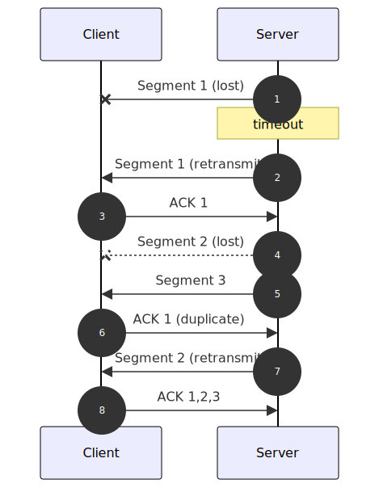

class: title-slide # Shared Memory and<br>TCP Streams ## Inter-process communication in Dora <div class="author-info"> Philipp Oppermann<br> os2edu<br> 2023-11-27 </div> --- name: middle-slide layout: true class: middle-slide <div class="footer">Shared Memory and TCP Streams, Philipp Oppermann, os2edu, 2023-11-27</div> --- # Agenda - Background: Dora inputs and outputs - TCP Streams in Rust - Message passing using shared memory - General Design - Automatic cleanup - Optimizations TODO: update --- # Dora: Inputs and Outputs .right-column[ <div style="margin-top: -2rem; margin-left: 2rem; height: 30rem;"> <h3>Side Note</h3> In addition to nodes, dora also allows defining <strong>operators</strong> that share an address space. This talk focuses on dora <em>nodes</em>. <div style="margin-top: 4rem; margin-left: -13rem;"> </img> </div> </div> ] - Dora dataflows consists of multiple nodes - Each node is a separate process → isolation, fairness, flexibility - Nodes communicate through messages - Each node defines a set of inputs and outputs - Inputs are mapped to outputs of other nodes through `YAML` file: ```yaml nodes: - id: node_1 custom: outputs: - `some_output` - id: node_2 custom: inputs: foo: `node_1/some_output` ``` --- # Best way to pass messages? .right-column[ <div style="margin-left: 5rem; margin-top: 10rem;"> <strong>UNIX IPC Examples:</strong> <ul style="margin-top: 0rem;"> <li>domain sockets</li> <li>(named) pipes</li> <li>message queues (UNIX/POSIX)</li> </ul> </div> ] - **TCP sockets**<br> <table> <tr><td>➕</td><td style="width: 12rem;">cross-platform</td><td class="gray">works on Linux, Windows, etc.</td></tr> <tr><td>➕</td><td>local and remote</td><td class="gray">communication with remote machines is possible</td></tr> <tr><td>➖</td><td>relatively slow</td><td class="gray">overhead through ACKs, data copying, metadata</td></tr> </table> - **UNIX-specific IPC** <table> <tr><td>➖</td><td style="width: 12rem;">only on UNIX</td><td class="gray">does not work on Windows</td></tr> <tr><td>➖</td><td>local only</td><td class="gray">cannot communicate over network</td></tr> <tr><td>➕</td><td>faster than TCP</td><td class="gray">less overhead, but data is still copied</td></tr> </table> - **Shared memory** <table> <tr><td>➕</td><td style="width: 12rem;">cross-platform</td><td class="gray">works on Linux, Windows, etc.</td></tr> <tr><td>➖</td><td>local only</td><td class="gray">cannot communicate over network</td></tr> <tr><td>➕</td><td>fastest</td><td class="gray">zero-copy possible</td></tr> </table> → in Dora, we use a combination of TCP sockets and shared memory --- # Transmission Control Protocol (TCP)  <!-- sequenceDiagram autonumber participant Client participant Server Server-xClient: Segment 1 (lost) Note over Server: timeout Server->>Client: Segment 1 (retransmit) Client->>Server: ACK 1 Server--xClient: Segment 2 (lost) Server->>Client: Segment 3 Client->>Server: ACK 1 (duplicate) Server->>Client: Segment 2 (retransmit) Client->>Server: ACK 1,2,3 --> - Connection-oriented - server _listens_ for incoming connections - client connects to server → new connection opened - Reliable - _sequence number_ allows restoring correct order of packets - received messages are acknowledged through `ACK` replies - retransmit segment when ACK is not received - on timeout (see step 2) - on duplicate ACK (see step 6) -- - Other TCP mechanisms - checksum for error detection - flow control for slowing down sender for slower receiver - congestion control to avoid overloading the network --- # Avoiding TCP Overhead - **Delayed ACKs** - ACK messages are very small → large protocol overhead - Approach: Wait until 500ms to combine multiple ACKs into single response - **Nagle's Algorithm** - Goal: Avoid protocol overhead when _sending_ small packets - Approach: Buffer small messages until previous packet is acknowledged - allows combining multiple messages into one large packet -- <!-- sequenceDiagram autonumber participant Client participant Server Server->>Client: Segment 1 Server-\->Client: Segment 2 (buffered) Note over Client: after 500ms Client->>Server: ACK 1 Server->>Client: Segment 2 --> - **Problem:** Combining both algorithms can lead to significant delays - especially in low latency environments (e.g. local network) - most operating systems still enable both algorithms by default -- **→ Recommendation: disable Nagle's algorithm if latency is important** --- # Example: Using TCP Sockets in Rust **Server:** .right-column-wide[ ```rust use std::net::TcpStream; fn handle_connection(connection: TcpStream) -> std::io::Result<()> {...} ``` ] ```rust let listener = std::net::`TcpListener::bind`("127.0.0.1:80)?; for connection in listener.incoming() { handle_connection(connection?)?; } ``` **Client:** ```rust let stream = std::net::`TcpStream::connect`("127.0.0.1:80)?; // implements std::io::Read and std::io::Write traits stream.write(&[42])?; let mut data_buffer = [0; 128]; stream.read(&mut reply_buffer)?; ``` --- # Example: Disabling Nagle's Algorithm **Server:** ```rust let listener = std::net::TcpListener::bind("127.0.0.1:80)?; for connection in listener.incoming() { let connection = connection?; connection.`set_nodelay(true)`?; handle_connection(connection)?; } ``` **Client:** ```rust let stream = std::net::TcpStream::connect("127.0.0.1:80)?; stream.`set_nodelay(true)`?; ``` Nagle's algorithm affects only the sending side → we need to disable it on both server and client --- # Message Boundaries ```rust let mut buffer = [0; 1024]; let number_of_received_bytes = stream.read(&mut buffer)?; let data = &buffer[..number_of_received_bytes]; ``` - TCP is a stream-based protocol → no message boundaries - Does `data` contain a full message? - Does `data` contain multiple messages? -- - We need a way to split the received bytes into messages again - Option 1: Add a **terminator** between messages → must not be used in serialized data - Option 2: Send the **message size** first --- # Example: Simple Message Protocol ```rust fn send_message(connection: &mut TcpStream, message: &[u8]) -> std::io::Result<()> { `// write message size first as little-endian u64` let len_raw = (message.len() as u64).to_le_bytes(); connection.write_all(&len_raw)?; `// write the actual data` connection.write_all(message) } fn receive_message(connection: &mut TcpStream) -> std::io::Result<Vec<u8>> { `// read message length first as little-endian u64` let data_len = { let mut raw = [0; 8]; connection.read_exact(&mut raw)?; u64::from_le_bytes(raw) as usize }; `// read data_len bytes of data` let mut data = vec![0; data_len]; connection.read_exact(&mut data)?; Ok(data) } ``` --- # Example: Async TCP Sockets using tokio - TCP streams work well with async Rust - async tasks have a very small overhead → spawning a task per connection is fine - easy to wait for multiple connections at once - Example client using `tokio`: ```rust use tokio::io::AsyncWriteExt; #[tokio::main] async fn main() -> Result<(), Box<dyn std::error::Error>> { let mut stream = tokio::net::TcpStream::connect("127.0.0.1:80").await?; // write some data stream.write_all(b"hello world!").await?; Ok(()) } ``` - `tokio::net::TcpStream` is based on `std::net::TcpStream` set to non-blocking mode - it is possible to convert `std::net::TcpStream` to an async `TcpStream` --- # Example: Async TCP Server using tokio Spawn new task for each incoming connection: ```rust let listener = tokio::net::TcpListener::bind("127.0.0.1:80).await?; loop { let (socket, _) = listener.accept().await?; `tokio::spawn`(handle_connection(connection)); } ``` ```rust async fn handle_connection(socket: tokio::net::TcpStream) -> std::io::Result<()> { loop { match read_next_message(&mut socket).await? { Some(message_raw) => { let message = deserialize_message(message_raw)?; handle_message(message).await?; } None => break Ok(()); } } } ``` --- # Waiting on Multiple Events ```rust use tokio_stream::wrappers::{ReceiverStream, TcpListenerStream}; use futures_concurrency::stream::Merge; let listener = tokio::net::TcpListener::bind("127.0.0.1:80).await?; let `new_connections` = TcpListenerStream::new(listener).map(Event::NewConnection); let (task_messages_tx, task_messages_rx) = tokio::sync::mpsc::channel(5); let `task_messages` = ReceiverStream::new(task_messages_rx).map(Event::TaskMessage); let mut events = (new_connections, task_messages).`merge()`; while let Some(event) = events.next().await { match event { Event::NewConnection(connection) => tokio::spawn(handle_connection(connection, task_messages_tx.clone())), Event::TaskMessage(message) => {...} } } ``` ```rust enum Event { NewConnection(std::io::Result<tokio::net::TcpStream>), TaskMessage(TaskMessage), } ``` --- class: center,middle # Shared Memory --- # Shared Memory **Unix** - Allocation: create file descriptor through `shm_open("/some_id", flags, mode)` - Mapping: map file descriptor into address space using `mmap` - Deallocation: unmap memory from address space, then call `shm_unlink("/some_id")` **Windows** - Allocation: create temporary file with `dwShareMode` set - Mapping: use `CreateFileMapping` or `OpenFileMapping` - Deallocation: call `CloseHandle` → the **`shared_memory` crate** provides a cross-platform API --- # Shared Memory: Example Process A: ```rust use shared_memory::*; let shmem = match ShmemConf::new().size(4096).create()? { // write some data unsafe { *raw_ptr.as_ptr() = 42 }; let `id` = shmem.get_os_id().to_owned(); send_id_to_proc_b(`id`)?; // e.g. through a TCP message ``` Process B: ```rust let `id` = receive_id_from_proc_a()?; let shmem = ShmemConf::new().os_id(`id`).open()?; let data = unsafe { *shmem.as_ptr() }; ``` --- # Pass Data using Shared Memory 1. Prepare message in sender - calculate required size (in bytes) - easy approach: serialize to `Vec<u8>`, then check length → drawback: copies the data - recursive approach: - use `size_of::<T>()` for self-containing types - for types containing pointers, calculate sum of all children - add padding to satisfy alignment requirements - allocate a large enough shared memory region -- - copy the data into shared memory - avoiding this copy is difficult - idea: construct the data directly in shared memory, i.e. after the region has been allocated --- # Pass Data using Shared Memory 1. Prepare message in sender <img src="images/check2-circle.svg" class="pass-data-check"> 2. Send message to receivers - send ID of shared memory region to receiver - use different IPC channel, e.g. TCP socket - only a few bytes of data → throughput not that relevant - channel should be low-latency → disable Nagle's algorithm when using TCP - include some metadata, e.g. - source node ID - output ID - data type - multiple receivers are possible --- # Pass Data using Shared Memory 1. Prepare message in sender <img src="images/check2-circle.svg" class="pass-data-check"> 2. Send message to receivers <img src="images/check2-circle.svg" class="pass-data-check"> 3. Read out message in receiver - map shared memory region in receiver - read-only, as there might be multiple receivers - copy out data - or: perform only lazy operations on data<div style="float: right; margin-left: 2rem;"><img src="images/img-add-example.drawio.svg" height="200"></img></div> - read directly from shared memory regions without copy - write result directly to an output shared memory region --- # Pass Data using Shared Memory 1. Prepare message in sender <img src="images/check2-circle.svg" class="pass-data-check"> 2. Send message to receivers <img src="images/check2-circle.svg" class="pass-data-check"> 3. Read out message in receiver <img src="images/check2-circle.svg" class="pass-data-check"> ## Deallocation? We need to deallocate all shared memory regions again. - Where? In sender or receiver? - When? - How to deal with lost/dropped messages? --- # Shared Memory Cleanup - Should happen in sender - there might be multiple (or zero) receivers - We must not free shared memory while it's still in use - keep track of number of receivers - receivers report back once done with data - clean up once all receivers are done - Dora needs to report dropped messages to sender - otherwise the sender will keep waiting for a confirmation from receiver - message drops happen when a sender is much faster than a receiver --- # Shared Memory Cleanup: Implementation - Generate a unique token for each message in sender - Dora daemon forwards message to receivers - Keeps track of token and pending receivers - Receivers report to daemon when they're done with a message - identified by token - Daemon notifies sender when all receivers dropped the message - Sender cleans up shared memory region again - Cleanup is done in API crate → no manual operation is needed --- # Shared Memory Cleanup: Challenge - Receivers might misbehave - large queue buildup - blocked or stuck - store received data too long (e.g. in some heap collection) - We still want to free data at some point -- - → Force clean-up after some timeout - Does not remove existing mappings from other processes - Creating new mappings will result in an error --- # Optimizations - Reduce communication with daemon by bundling all information - For example, send tokens of dropped messages when requesting next input - Cache freed shared memory regions in sender - Instead of deallocating them directly - If next sent message fits, reuse allocation - Send small data directly over TCP - The overhead of allocating and mapping shared memory would be larger --- # Planned Optimizations - Allocate larger shared memory region and partition it manually - Single allocation can be used for multiple messages - More opportunities for reuse → avoid extra allocations - Drawback: Manual memory management required for region (i.e. which parts are in use) - Cache memory regions on receiver side as well - Goal: avoid syscall to map region when next message reuses previous region - Use shared memory queue for sending metadata - Use native OS events for signalling new data - Avoids latency introduced by e.g. TCP stream --- # Using Shared Memory with Arrow - We use Arrow to pass data to Python nodes/operators without copying - The Python runtime only owns a pointer to the data - To access the data, users need to use the FFI functions provided by the `pyarrow` library - Approach: - Use official `arrow` crate to construct Arrow array backed by received shared memory region - first, create `arrow::Buffer`s based on raw pointer and metadata - then combine the buffers into an `ArrayData` instance - Convert Arrow array to `PyObject` through `ToPyArrow` trait - converts the array to a FFI-compatible struct - invokes the `_import_from_c` function of the `pyarrow` Python library - Return the `PyObject` to the Python node - can be accessed using `pyarrow` library, or converted to `numpy` or `pandas` formats (no copy!) --- # Shared Memory Cleanup with Arrow - Sender requires notification when shared memory can be dropped/reused<br> → we need to know when Python code is done with the Arrow array - Arrow format defines a _release callback_ - **must** be called by consumers when dropping the data - the `pyarrow` library does this automatically when Python GC drops the array - For proper cleanup, we need to set a _release callback_ in the data<img src="images/buffer-from-custom-allocation.png" style="float: right; width: 25rem; padding-left: 1rem; margin-top: 1rem; border-left: 1px solid #bbb;"> - the `arrow` crate defines a callback that forwards to the standard Rust `Drop` trait - we only need to set a proper owner for the underlying buffer using `Buffer::from_custom_allocation` -- - Open Question: How can we prevent users from keeping the data active for too long? - e.g. user might store it in a list and never drop it → shared memory is never freed - _Please let us know if you have a good solution!_ --- class: final-slide # Summary TODO